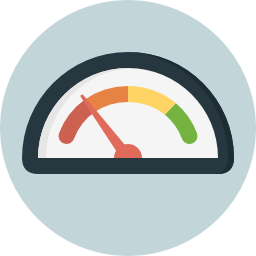

Gerenciamento de TI
Monitore seu ambiente de TI: servidores, redes, sistemas, aplicações, roteadores, BDs, VMs ou qualquer dispositivo que gere dados.
Experiência
Construção robôs que simulam os passos de um usuário ao utilizar sua aplicação e corrija falhas antes que gerem impacto.
Tráfego de Rede
Veja o que passa através da rede da sua empresa para melhorar seu desempenho e identificar a causa-raiz dos problemas.

Dashboards
Construção de Dashboards para acompanhar os resultados da sua empresa e antecipe-se aos problemas.
Cloud Computing
Os usuários podem acessar seus arquivos e aplicações, independente do sistema operacional instalado e não precisam ter uma máquina potente para isso.

E-Commerce
Desenvolvemos de lojas virtuais "e-commerce" com maior confiança e segurança para as suas vendas online